Internal walls and floor · Perthshire, Scotland
Kerry Cottage
A solid sandstone cottage, lined inside and given a new insulated floor. Walls, floor and junctions were done as one continuous, vapour-open envelope.
See the thermal results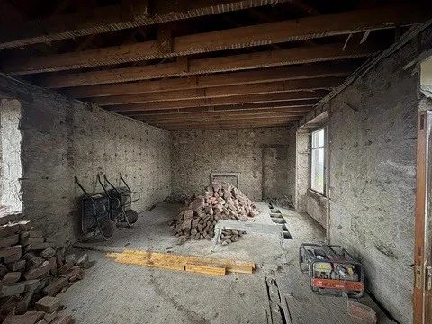

77 m²Internal wall insulation
65 m²Insulated floor
450 mmSolid sandstone external walls
U-value 0.51Walls, down 76% (site calculation)
The building and the brief
Work with the sandstone, not against it
Kerry Cottage has 450 mm solid sandstone external walls. Walls like these hold and release moisture through the year, so the insulation had to let them keep doing that.
BreatheTherm was used as one joined-up, vapour-open build-up. Insulating mineral perlite layers form the base that regulates moisture. High-performance aerogel was added where the profile had to stay slim.
- Preserve natural moisture movement
- Regularise uneven masonry
- Limit loss of internal space
- Coordinate walls, floor and junctions
- Achieve a meaningful thermal upgrade
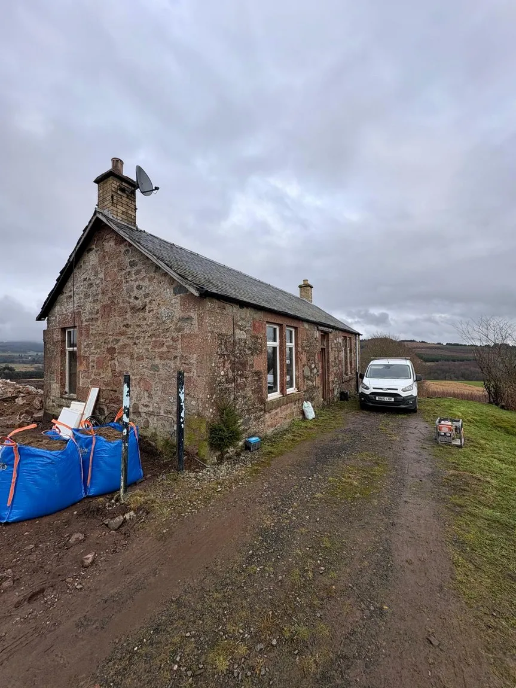
The build-up
One continuous envelope, wall to floor
Every layer is mineral and vapour-open, from the sandstone to the finish and from the hardcore to the floor core.
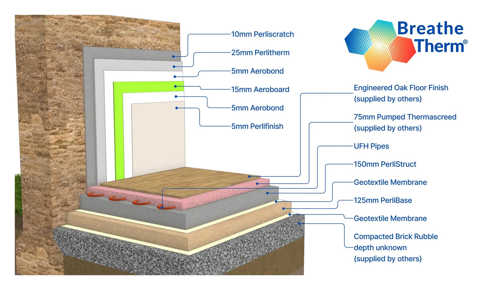
Wall, as installed
- Existing450 mm solid sandstone
- 5 mmPerliScratch
- ~40 mmPerliTherm
- 5 mmAeroBond
- 15 mmAeroBoard
- FinishReinforced mineral finish: AeroBond, PerliMesh, PerliFinish
Floor, as installed
- BaseCompacted hardcore
- GridCellular geogrid
- 155 mmPerliBase
- 3.5 mmGeotextile
- 6 mmSuspended steel grid
- 150 mmPerliStruct
Underfloor heating, 75 mm pumped Thermascreed and the engineered oak floor followed, supplied by others.
Wall system
The walls, in five stages
-
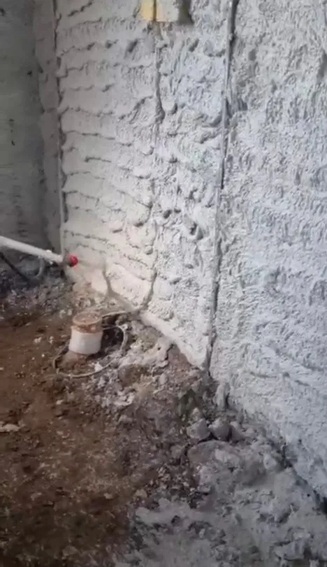
01Prepare the substrate
Loose and incompatible material removed to expose sound mineral masonry.
-
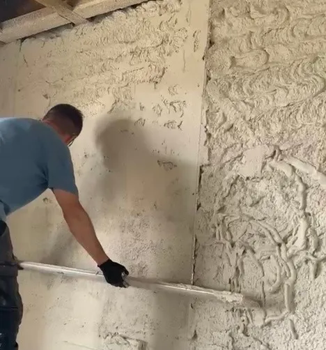
02Build the mineral base
PerliScratch and PerliTherm applied and levelled to form the insulating base.
-
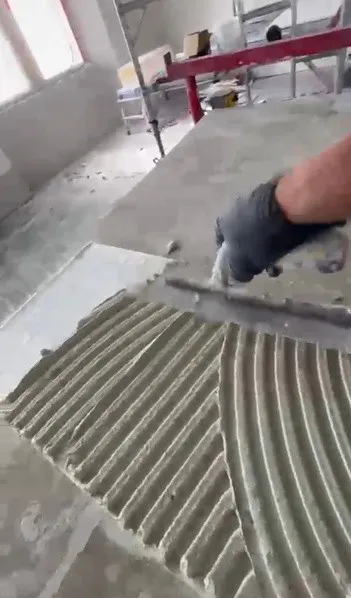
03Apply AeroBond
Mineral adhesive combed out to receive the aerogel board.
-
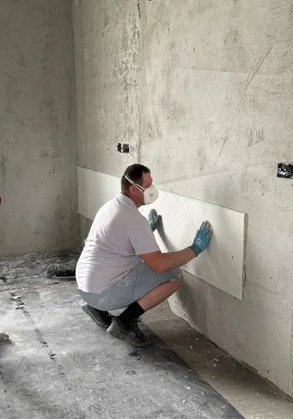
04Install AeroBoard
15 mm AeroBoard fixed over the prepared mineral base.
-
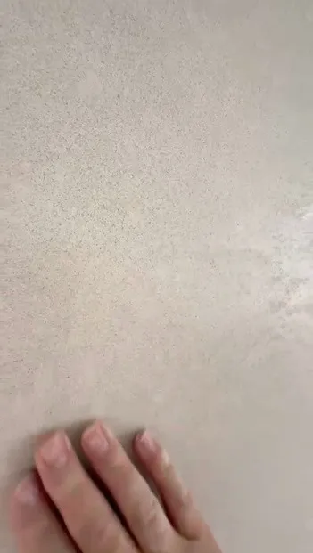
05Complete the finish
AeroBond, reinforcement and PerliFinish complete the vapour-open surface.
Floor system
The floor, in five stages
-
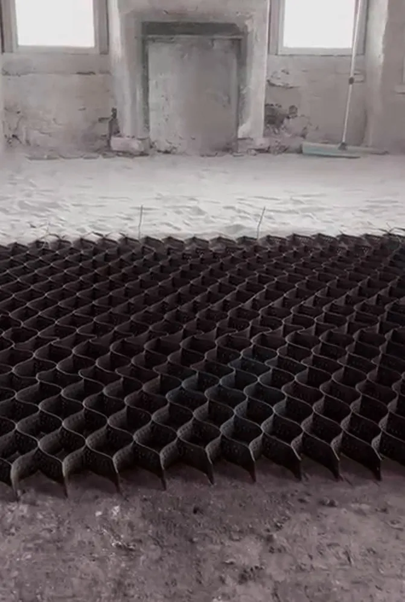
01Cellular formation
Cellular geogrid laid over the prepared formation.
-
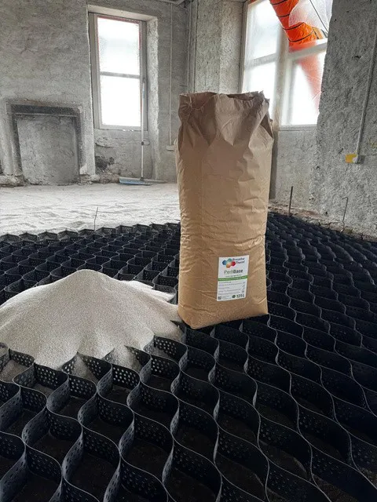
02Install PerliBase
PerliBase placed within the cellular containment.
-
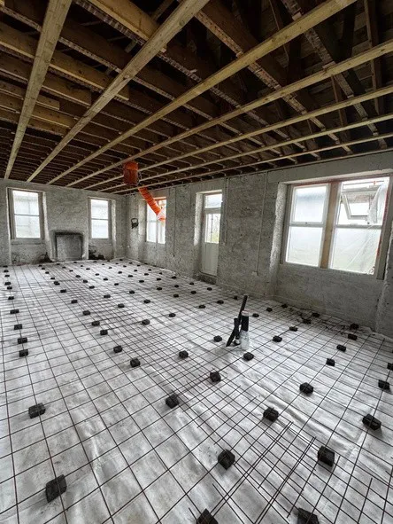
03Separate and reinforce
Geotextile separation and a suspended steel grid installed.
-
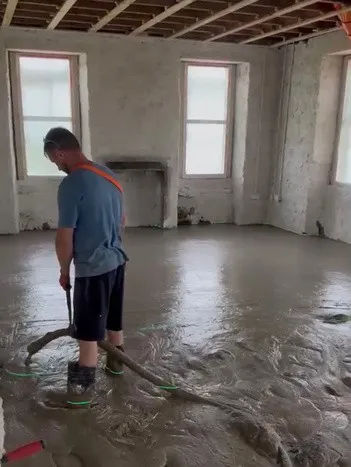
04Place PerliStruct
PerliStruct mixed, pumped and placed across the floor.
-
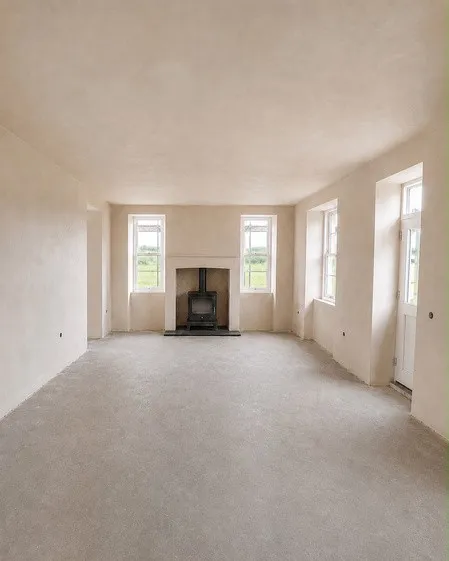
05Floor stage complete
BreatheTherm floor complete, ready for underfloor heating and screed by others.
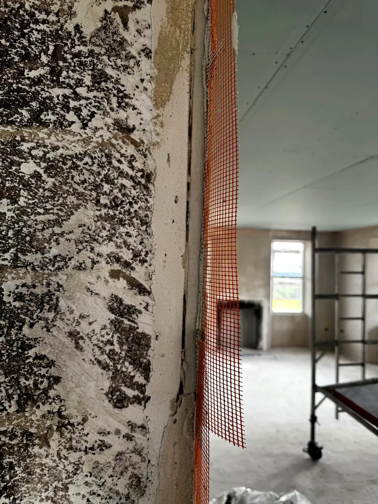
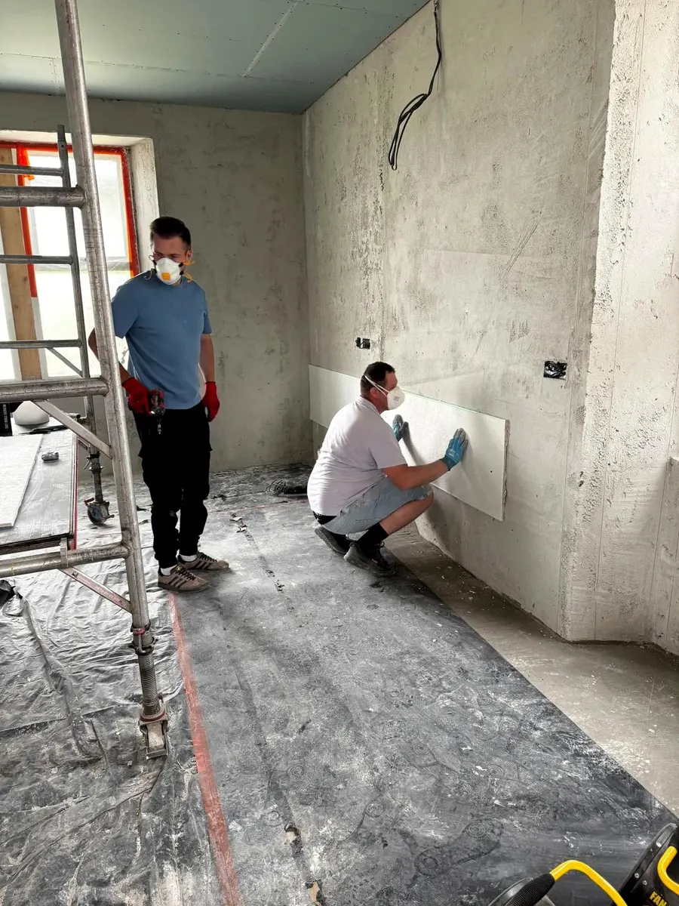
Adapting on site
The masonry was less regular than expected
Wall plane
After strip-out, the sandstone was less regular than anticipated. PerliTherm was built up locally to about 40 mm, rather than the specified 25 mm, to set a true wall plane before the AeroBoard went on.
Reveals and junctions
The 15 mm AeroBoard was used where a slimmer profile was needed. Insulation stayed continuous through the wall plane and around the reveals.
Indicative thermal performance
Heat loss through the walls cut by about three quarters
These are site calculations, not SAP calculations.
Wall U-value, W/m²K
-
Existing 450 mm sandstone
-
25 mm PerliTherm + 15 mm AeroBoard, as specified
-
About 40 mm PerliTherm + 15 mm AeroBoard, as installed
Lower is better. Wall figures are a simple resistance overlay. They exclude junctions, fixings, moisture variation and workmanship tolerances. Product λ values: PerliTherm 0.064 W/mK, AeroBoard 0.017 W/mK.
Floor core
R = 4.02 m²K/W
Thermal resistance of the BreatheTherm layers alone: 155 mm PerliBase and 150 mm PerliStruct.
PerliBase λ 0.048 W/mK, PerliStruct λ 0.19 W/mK. A ground-floor U-value also needs the floor’s geometry, exposed perimeter, and ground and edge data.
The outcome
Walls and floor done, ready for the finishes
The wall lining, mineral and aerogel, was completed across 77 m². The PerliBase and PerliStruct floor was completed across 65 m², ready for the underfloor heating and screed.
Decoration and floor finishes followed as separate stages, by others.